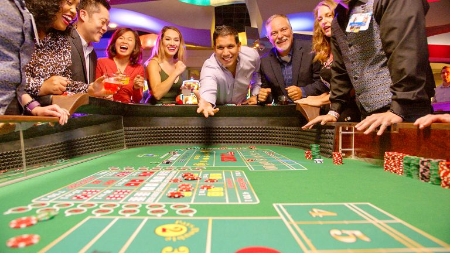

Istoric
Craps (barbut) este un joc de zaruri în care jucătorii fac pariuri pe punctajul total a două zaruri rostogolite.
Jucătorii pot paria bani între ei (la jocul pe stradă, de asemenea, cunoscut sub numele de barbut) sau contra unei „bănci” (la casino, joc cunoscut sub numele de craps). Deoarece nu este nevoie de un echipament sofisticat, barbutul poate fi jucat în toate mediile informale.
Craps s-a dezvoltat prin simplificarea unui joc de noroc englez mai vechi. Originile sale sunt complexe, datând încă de pe vremea cruciadelor, mai târziu fiind influențat de jucatorii francezi. Ceea ce avea să devină versiunea modernă americană a jocului a fost adus la New Orleans de Bernard Xavier Philippe de Marigny de Mandeville, descendent al unor proprietari bogați din Louisiana, un parior și politician. În versiunea lui Bernard de joc era o vulnerabilitate pe care jucătorii o puteau exploata la cazinou, folosind anumite zaruri şi profitând de modul în care jucătorii pot paria cu sau împotriva celui care arunca zarurile. John H. Winn a introdus opțiunea de pariere „don’t pass” („nu trece”), pentru a remedia această problemă, și este această versiune de joc zaruri încă mai există și astăzi.
Jocul, cunoscut la început sub numele francez crapaud (care înseamnă „broască”, cu referire la stilul original de joc de oameni ghemuit pe o podea sau trotuar), conform relatărilor îşi datorează popularitatea sa modernă de la jocurile pe stradă. barbutul poate fi jucat prin aruncarea zarurilor cu oprire contra unui perete, bordură, etc, sau fără oprire, la alegerea de jucători.
În timpul celui de al doilea război mondial, barbutul a devenit popular printre soldați, care de multe ori îl jucau folosind o patură de armată ca suprafață de joc. Cu sau fără oprire, acest lucru a dat naștere la metodele presupuse de control al zarurilor, dintre care cel mai cunoscut era „aruncarea pe pătura armatei.”
Variantele de pariuri depind de cazinou și de masă, și, uneori, un cazinou va avea tabele diferite care utilizează sau omit aceste variante.
Zaruri si piese pentru jocuri
